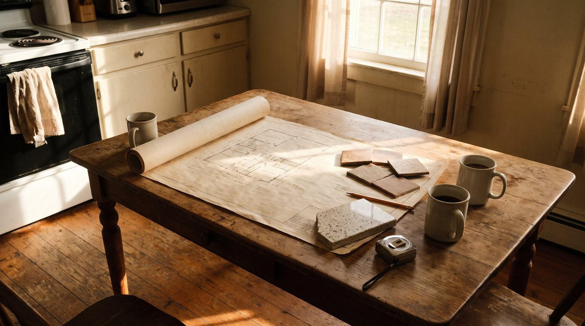
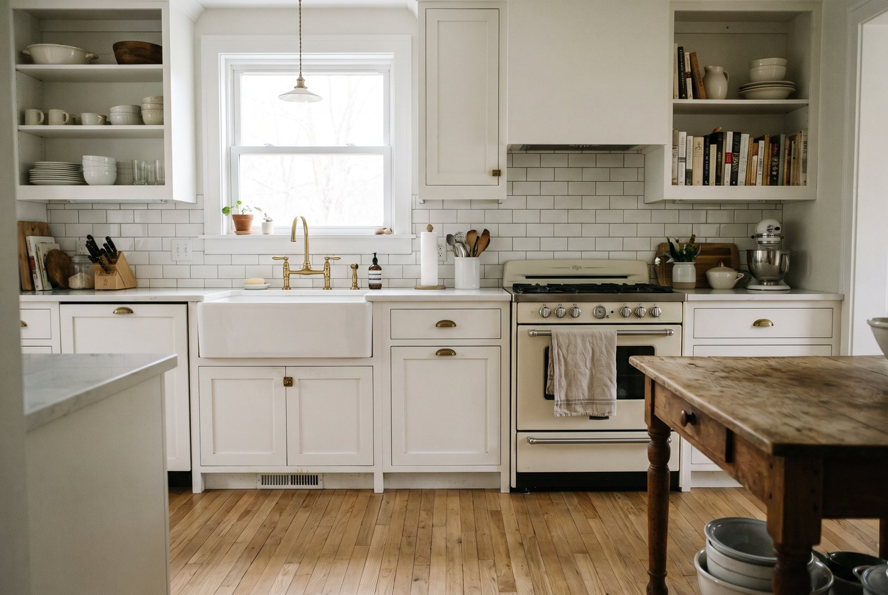

Kitchen, bathroom and basement remodeling in Exton, PA
D N E Contracting is a women-owned remodeling contractor and licensed plumber serving Exton and Chester County. Kitchen, bathroom and basement remodels, plus plumbing repairs and water heaters. The consultation is free, in your home, and you never have to decide on the spot.
Book a free consultation Call or text (484) 939-8535
Licensed & insured · Owner on every job · Serving Exton 19341 and all of Chester County

What we do in Exton
- Kitchen RemodelingMost kitchens take 3–6 weeks
- Bathroom RemodelingMost bathrooms take 2–4 weeks
- Basement RemodelingMost basements take 3–6 weeks
- Plumbing & Water HeatersMost repairs same or next day

How we work in Exton
- Free in-home consultation with the owner
- The plumbing is done by the owner, not subcontracted
- Written estimates and schedules
- Permits and inspections handled for you
- Shoes off at the door, one point of contact
Exton remodeling questions
Do you serve all of Exton?
Yes. Exton and the surrounding parts of Chester County are inside our regular service area.
What permits do remodels need in Exton?
Kitchens, bathrooms and finished basements almost always need township permits once plumbing, electrical or structural work is involved. We pull them and schedule the inspections for you.
Can I get a price before you visit my Exton home?
Not a real one. A number before anyone has stood in the room is a guess. You can sketch the room in the online planner before the visit, and the estimate comes in writing after it.
Nearby areas we also serve
Book a free consultation in Exton
In your home. Nothing to decide on the spot.